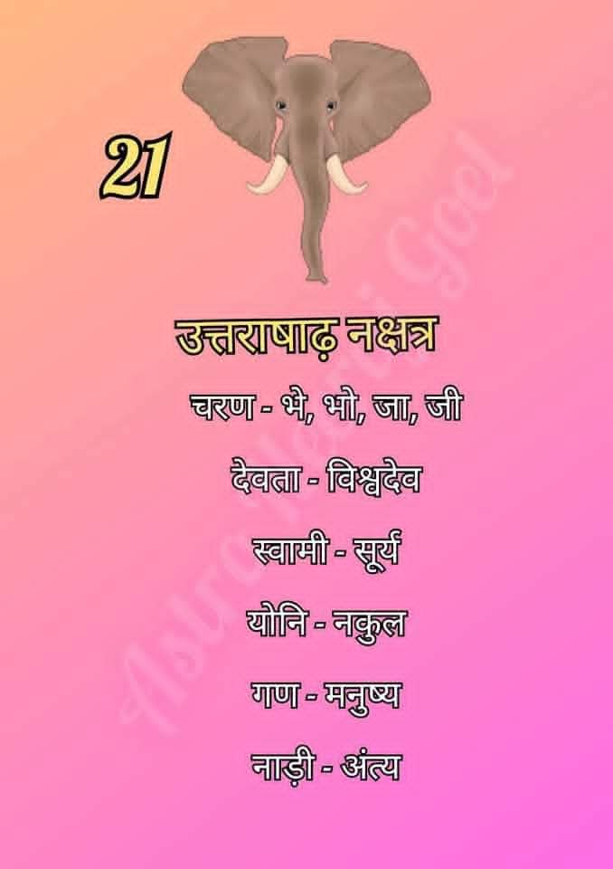

उत्तराषाढ़ा नक्षत्र (Uttara Ashadha Nakshatra)
उत्तराषाढ़ा नक्षत्र आकाश मंडल का इक्कीसवां नक्षत्र है। इसे 'विश्वेदेवा' का नक्षत्र माना जाता है, जो स्थिरता, विजय और अटूट नैतिक मूल्यों का प्रतीक है। यह नेतृत्व और उच्च उद्देश्यों के लिए जाना जाता है।

सामान्य स्वभाव:
उत्तराषाढ़ा नक्षत्र में जन्मे जातक अत्यंत अनुशासित, गंभीर और लक्ष्य-केंद्रित होते हैं। वे अपने जीवन में सत्यता और मर्यादा का पालन करने वाले होते हैं और कठिन परिश्रम के माध्यम से सफलता प्राप्त करना पसंद करते हैं।
उत्तराषाढ़ा नक्षत्र की मुख्य विशेषताएँ
- नेतृत्व क्षमता: ये स्वाभाविक रूप से अच्छे नेता होते हैं, जो दूसरों को सही मार्गदर्शन प्रदान करते हैं।
- गहरा अनुशासन: इनमें कार्य के प्रति गहरी निष्ठा और समय की पाबंदी होती है।
- धैर्य और दृढ़ता: ये बिना डगमगाए अपने लक्ष्यों की दिशा में लंबे समय तक कार्य करने में सक्षम होते हैं।
- नैतिक मूल्य: ये अपने सिद्धांतों और नैतिकता से कभी समझौता नहीं करते।
- परोपकारी प्रवृत्ति: समाज और दूसरों के कल्याण के लिए कार्य करना इनका स्वभाव होता है।
शिक्षा एवं करियर
उत्तराषाढ़ा नक्षत्र के जातक अपनी प्रशासनिक और नेतृत्व क्षमता के कारण निम्नलिखित क्षेत्रों में बहुत सफल होते हैं:
- प्रशासनिक सेवाएँ एवं राजनीति (Administration & Politics)
- प्रबंधन और उच्च नेतृत्व (Executive Management)
- न्याय एवं कानून (Judiciary & Law)
- सामाजिक सेवा और एनजीओ (Social Services)
- शिक्षण और अनुसंधान (Teaching & Research)